☰
Home
最新消息
网页编程
Python教程
Python基础(莫烦) ▾
交互式学Python
多进程 multiprocessing
多线程 threading
窗口视窗 Tkinter
SQL
蔡邦华院士诞辰120周年纪念 ▾
蔡邦华院士诞辰120周年纪念图文集
蔡邦华院士诞辰120周年第一、二部分-著作和讲演稿
蔡邦华院士诞辰120周年第三部分-生平集
Biography of Academician Cai Banghua (1902-1983)(蔡邦华院士诞辰120周年生平集译文)
蔡邦华院士诞辰120周年第四部分-有关蔡邦华资料的附件
无线电台地图
老蔡网站
主页
3D翻动卡
老蔡3D翻动卡
Ottawa 7day's 天气
大型纪录片
《先生十集》
《百年南社六集》
《西南联大纪录片》
《世界桥梁博物馆-贵州》
《易经的奥秘》 | 曾仕强讲易经《CCTV百家讲坛》
《易经的智慧150集全》 | 曾仕强讲易经
旅游
旅游（一）
冰岛游
北欧游轮游
挪威游
北美西部游
加拿大班芙和坎莫尔游
旅游（二）
瑞士游2019（一）
瑞士游2019（二）
瑞士游2019（三）
意大利和法国南部游（一）
意大利和法国南部游（二）
旅游（三）
云南昆明游
日本东京游
宝岛台湾游（一）
宝岛台湾游（二）
旅游（四）
我的全部旅游网页
卢浮宫照片
相册
相册
中关村回顾相册
2013年苏沪行部分照片
渥太华郁金香节照片
周恩来总理照片100张
欧洲旅游相册
维也纳和布拉格照片(在右上角点 ⁝ 请选slideshow观赏)
2015年德国慕尼黑照片(在右上角点 ⁝ 请选slideshow观赏)
走访父亲20世纪30年代留学的慕尼黑大学(在右上角点 ⁝ 请选slideshow观赏)
在贝希特斯加登和国王湖(在右上角点 ⁝ 请选slideshow观赏)
在菲森和新天鹅堡(在右上角点 ⁝ 请选slideshow观赏)
前往萨尔茨堡和哈尔斯塔特(在右上角点 ⁝ 请选slideshow观赏)
在伦敦和巴黎(在右上角点 ⁝ 请选slideshow观赏)
苏格兰湖区、爱丁堡和牛津、莎翁故居(在右上角点 ⁝ 请选slideshow观赏)
旅游照片册
韩国行 2012—11
2015年5月7日-14日在伦敦和巴黎
法国和荷兰
5月20-21日卢森堡、科隆、法兰克福和英戈尔施塔特
2014年10月4日在总统巨石和基斯通
在Arches National Park拱门国家公园
在黄石国家公园
在佛光山和周伯昆家
在洛杉矶和比华利山庄
在圣迭戈
同学照片册
1955年北大附小同学聚会 - 情系燕园（2013年）（文）
1955年届北大附小同学聚会- 情系燕园（2013年）（视频）
1955~1958年清华附中初中甲班同学相册（2022修正版）
1958~1961年北京101中同学相册（2022版）I
1958~1961年北京101中同学相册（2016版）II
2010年北京101中老同学团聚的相册（2013）
北京工业大学50周年的相册
2016年老同学在多伦多和大瀑布之游
音乐
男女高音
Andrea Bocelli, Céline Dion
Andrea Bocelli, Sarah Brightman
Andrea Bocelli
三大男高音
帕瓦罗蒂纪录片《生命的七个咏叹调》
当你老了
小夜曲
托赛里小夜曲
莫扎特小夜曲
舒伯特小夜曲
施特劳斯
蓝色多瑙河
皇帝圆舞曲
春之声圆舞曲
贝多芬
命运交响曲
田园交响曲
第七交响曲
第八交响曲
第九交响曲
音乐讲座
舒曼「夢幻曲」
蕭邦的音乐為什麼好聽
超乎你想像的「卡農」!! - 巴哈: 郭德堡變奏曲
莫札特的音樂為什麼聽起來很「順」?
舒伯特-魔王 為什麼是世紀經典?
培训
课程（一）
W3Schools
codeSTACKr
Kevin Powell
Easy Tutorials
Python
彭彭课程
莫烦教学
课程（二）
DeepLearing.AI
Coursera
Hung-YiLee
课程（三）
Photoshop for Beginners
Photoshop Advanced
事件
浙江大学西迁宜州办学80周年纪念
浙江大学西迁宜州办学80周年纪念活动
浙江大学西迁宜州办学80周年宜州新闻
我在浙大西迁宜山办学80周年会上的发言
浙大西迁遵义办学老照片集锦
有关浙江大学
国立浙江大学校刊1930第一期
这些书带你了解浙江大学125年历史！
老书的故事丨第一集 ：李约瑟与竺可桢
浙大学者之五倍子研究将湄潭推向世界(钱永红)
琼瑶笔下的贵州湄潭《菟丝花 1965》
百年南社活动
《陈去病全集》序言-杨天石
《陈去病全集》第一集
《中关村回忆》发行
《中关村回忆》出版座谈会
中关村回忆发行有关报道的文章
书籍
我的著作（一）
中关村回忆
竺可桢校长和浙江大学（电脑阅读）
竺可桢校长和浙江大学（手机或平板阅读）
蔡邦华院士生平集
求是治虫害、兴邦振中华
蔡邦华院士诞辰110周年纪念文集（电脑阅读）
蔡邦华院士诞辰110周年纪念文集（手机或平板阅读）
我的求是之行（简）
欧洲八国印象（简）
跟着我去意大利（简）
陈绵祥诗词辑存（简）
我在Amazon网站上的著作（繁）（二）
求是之行-- 重走浙大西遷路
探索浙大“東方劍橋”之說: 重走浙大西遷路
陳緜祥詩詞輯存
歐洲八國游記
瑞士深度遊記
美国Amazon网上书籍
日本Amazon网上书籍
英国Amazon网上书籍
德国Amazon网上书籍
我的文章（一）
以“求是”精神，正本溯源，李约瑟访问浙大补录
忆自焚而亡的大学同学杨烨
一段塵封的台大光復的歷史和幾位重要人物
郑桐荪——中国数学界元老级的前辈
钱学森留下的珍贵精神遗产（《中关村回忆》中没收录）
我的文章（二）
关于南社
百年南社系列文章
兰臭图、樸学斋话酒图、东都谒庙图、秣陵悲秋图等文
凭弔先烈和秋瑾的绝笔诗
南社和中国科学社
南社社员胡先骕的《水杉歌》和郑桐荪的《河清歌》
看 CCTV-4 2011 走遍中国(苏州..剑胆琴心)有感
我的论文
A Proposed Chinese Language Videotex and Teletext Standard
A Survey of Various Chinese Ideographic Character Sets for Information Exchange
Extension of NAPLPS Videotex and Teletext Standard to the Chinese Language
人工智能在中文电脑中的应用
1987年前我在国内的其他文章
1987年前我的其他学术文章篇头
1984-87年我在加拿大的工作
其他
《易经》与科学（1985.6） 蔡恒息
视频
视频1
蔡邦华院士诞辰110周年纪念册
蔡邦华院士诞辰110周年纪念活动视频
震撼！开国大典上的10位浙大人！
蔡小麗画册
视频2
中国教育报道_先生回来展
Beautiful Hangzhou West Lake 杭州西湖
视频3
20131207 腾飞中国 腾飞中国： 特楼 主人（一）
20131207 腾飞中国 腾飞中国： 特楼 主人（二）
20131207 腾飞中国 腾飞中国： 特楼 主人（三）
20131207 腾飞中国 腾飞中国： 特楼 主人（四）
20131207 腾飞中国 腾飞中国： 特楼 主人（五）
20131207 腾飞中国 腾飞中国： 特楼 主人（六）
PPS演示
《中关村回忆》中的老科学家
中关村老科学家第一集
中关村老科学家第二集
中关村老科学家第三集
中关村老科学家第四集
中关村老科学家第五集
叶企孙先生专集
中关村老科学家全集
健康
Covid-19
健康1+1
WHO Coronavirus (COVID-19) Dashboard
COVID-19 in Canada
See more COVID-19 on Google
全球COVID-19每日病例统计
加拿大COVID-19每日病例统计
渥太华COVID-19每日病例统计
营养
营养平衡
联系人
老蔡(613)8234197,
caihengsheng @gmail.com
蔡蕾(847)7705855, lillyc@gmail.com
Dr.Kenneth Orbeck(613)7387660
×
最新信息
网页编程
Python
SQL
联系我们
世界城市画廊
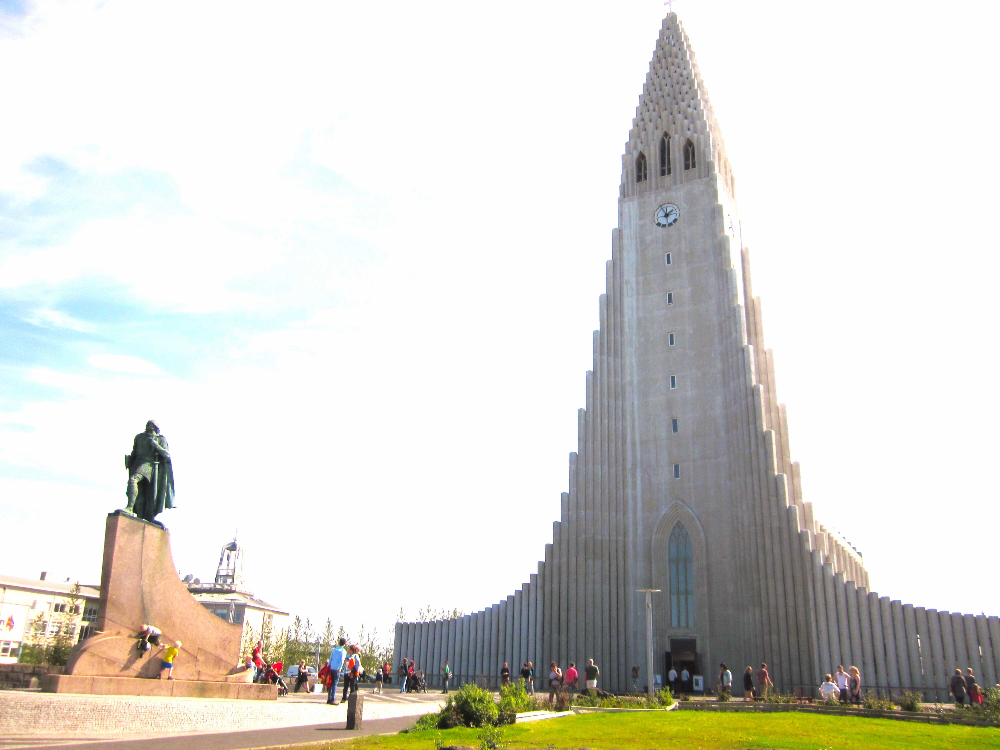
荷兰阿姆斯特丹
奥地利哈尔施塔特
中国北京紫禁城
德国柏林
瑞士伯尔尼
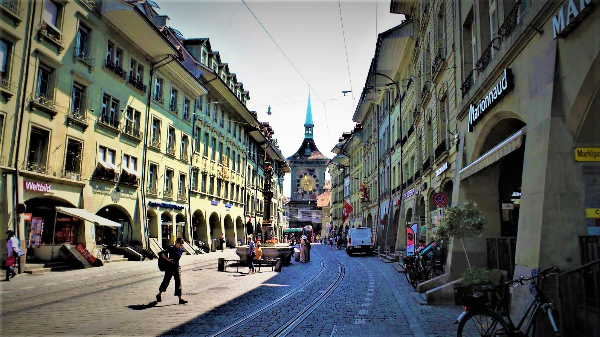
巴西里约热内卢
丹麦哥本哈根
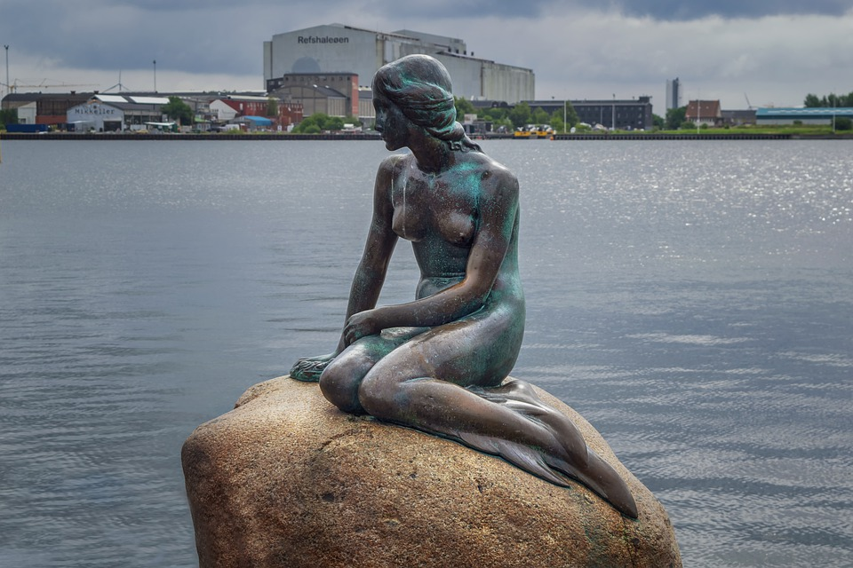
芬兰赫尔辛基
冰岛雷克雅未克
印度泰姬陵
英国伦敦
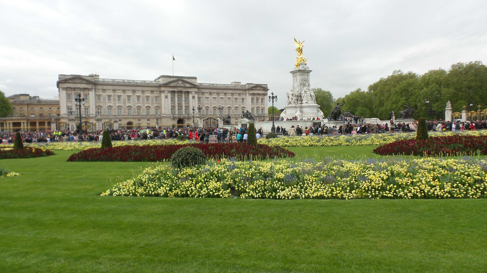
俄罗斯莫斯科
挪威峡湾
加拿大渥太华
法国巴黎
意大利罗马
南非
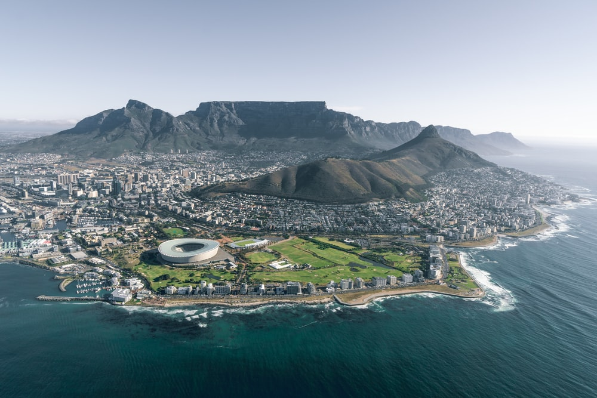
瑞典斯德哥尔摩
澳大利亚悉尼
美国华盛顿
视频展示厅：
鼠标移到展示视频或手点该屏，显示控制按钮：‖ ▶ 停止或开始、静音或有声、现屏或全屏；按 ⁝ 可选其他功能。要观赏小图标视频,双击小图，弹出新页观看，关闭该页，可进行下一选择。
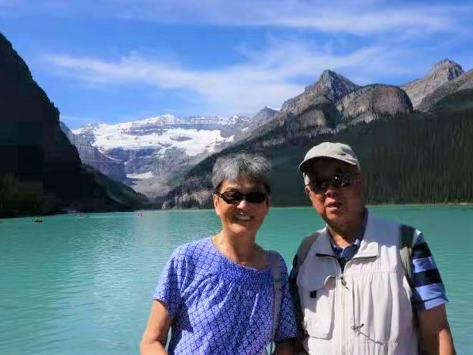加国班芙
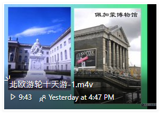北欧游轮
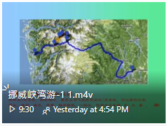挪威峡湾
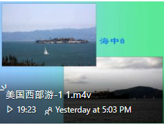美国西部
台湾行I
台湾行II
云南昆明
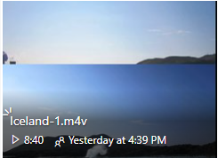冰岛游
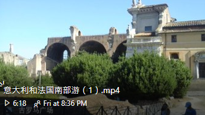意法南I
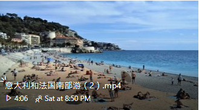意法南II
瑞士游I
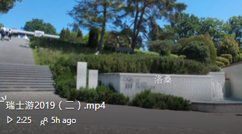瑞士游II
瑞士游III
日东京游


{kind=link}
{kind=link}
{kind=link}
{kind=link}
{kind=link}
{kind=link}
{kind=link}
{kind=link}
{kind=link}
{kind=link}
{kind=link}
{kind=link}
{kind=link}
{kind=link}
{kind=link}
{kind=link}
{kind=link}